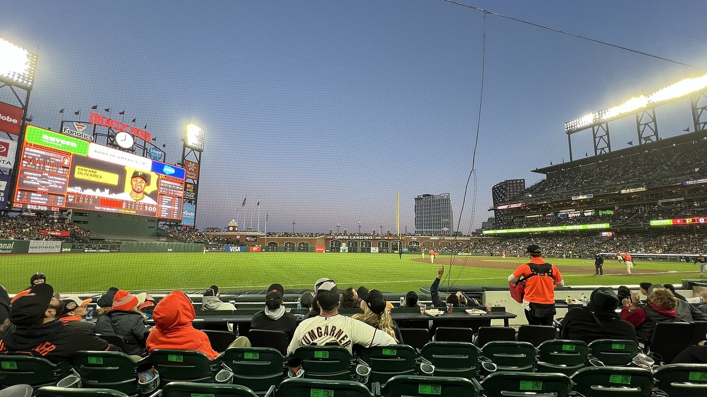

Giants Injury Report
Who is on the injured list, who is day to day, and when each one is expected back, kept current all year at this one address.

Check this page before a Giants game, and through the winter while the rehab list sorts itself out. Every player on the injury report is here with his position, the injury, his status, when he is expected back and when it last changed. It refreshes several times a day, so the link never changes.
The current report
Updated Fri, Nov 13, 7:24 AM Pacific. 13 on the injured list or out, 0 day to day. Next game: vs Colorado Rockies, Wed, Mar 24.
| Player | Pos | Injury | Status | Expected back | Last update |
|---|---|---|---|---|---|
| Rafael Devers | 1B | Abdomen, surgery | Out | Spring training | Mon, Nov 2 |
| Matt Chapman | 3B | Abdomen, surgery | Out | Spring training | Mon, Nov 2 |
| Daniel Susac | C | Knee, fracture, left | Out | Spring training | Mon, Nov 2 |
| Harrison Bader | CF | Foot, plantar fasciitis, left | Out | Spring training | Wed, Nov 11 |
| Casey Schmitt | LF | Knee, surgery, left | Out | Spring training | Mon, Nov 2 |
| Alberto Laroche | P | Shoulder, strain, right | Out | About 5 months (est. Apr 2027) | Tue, Nov 3 |
| Hayden Birdsong | RP | Elbow, surgery, right | Out | About 7 months (est. Jun 2027) | Mon, Nov 2 |
| Randy Rodriguez | RP | Elbow, surgery, right | Out | Spring training | Tue, Nov 10 |
| Rowan Wick | RP | Elbow, surgery, right | Out | Spring training | Mon, Nov 2 |
| Blade Tidwell | SP | Elbow, sprain, right | Out | Spring training | Mon, Nov 2 |
| Carson Whisenhunt | SP | Elbow, surgery, left | Out | Spring training | Mon, Nov 2 |
| Trevor McDonald | SP | Elbow, surgery, right | Out | About 10 months (est. Sep 2027) | Mon, Nov 2 |
| Luis Hernandez | SS | Hip | Out | No timeline yet | Tue, Nov 3 |
How to read it
Out means he is on the injured list or otherwise unavailable. The injured list comes in a 10 day version for position players, a 15 day version for pitchers, a 7 day concussion list, and a 60 day list that also takes him off the 40 man roster. Day to day means a minor problem, decided game by game. Over the winter the list stays up with the players rehabbing for spring.
Expected back is the latest timeline we can stand behind. When the update names one, like six weeks or two to three weeks, it shows here in plain numbers with the date it was reported. When it does not, you see the estimated return date carried on the league report, marked est. Timelines move, and this page moves with them. If nothing has been reported, it says no timeline yet. Practice participation is not shown: if the feed does not report it, we do not guess at it.
Where the numbers come from
Status, designation and injury come from the league injury report as published through ESPN, read automatically. Nothing in the tables is typed in by hand. When the team announces something the feed has not caught yet, it shows up here on the next refresh, usually within a few hours. See our editorial standards and corrections policy.
Our Giants injury coverage
- The Padres Came Into Our Ballpark and Took All Three
- The Giants Keep Promising October. Oracle Park Is Still Waiting.
For more, see Giants roster and depth chart and 2026 season results.
Every Bay Area injury report
Every Bay Area team · 49ers · Raiders · Warriors · A's · Sharks